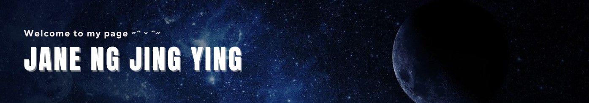

Welcome

Hi! I am Jane, a dedicated second-year Computer Science student with a specialization in Bioinformatics at the University of Technology Malaysia (UTM). I am passionate about using technology to solve complex problems across different fields. Throughout my academic journey, I have developed a strong foundation in programming languages such as C++, Java, HTML and CSS with a keen interest in applying these skills to various aspects of technology and software development. I actively engage in extracurricular activities to expand my knowledge and network with like-minded individuals. I am looking forward to exploring opportunities that merge computer science with life sciences to drive innovation and make a meaningful impact.
My Tech Toolkit
A collaborative web application for interface design
❀ Figma
❀ Figma
A platform that provides computer science resources and coding challenges
❀ GeeksforGeeks
❀ GeeksforGeeks
A platform for developers to create, store, manage and share their code
❀ GitHub
❀ GitHub
A web-based list-making application
❀ Trello
❀ Trello
A freemium educational website for learning coding online
❀ w3schools
❀ w3schools
Research


Contact
Jane Ng Jing Ying
Faculty of Computing
Universiti Teknologi Malaysia
81310 UTM Johor Bahru
Johor, Malaysia
jane@graduate.utm.my
Phone: 014-361 1706